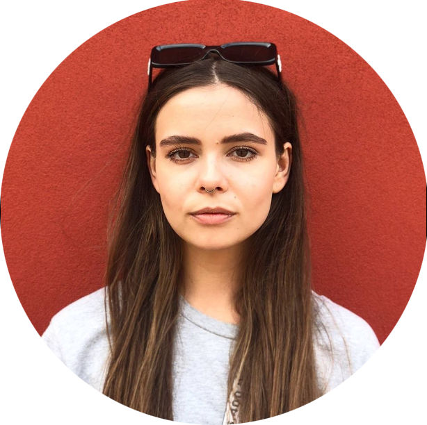

Круглый стол для аспирантов
Анна Попова Нетология-групп
Анна Попова
старший координатор направления "Программирование" в "Нетология-групп"
- Основана в 2009 году (бренд «Нетология»)
- В 2014 году слияние с Фоксфорд и возникновение Нетология-групп
- В 2017 году к компании присоединился проект Edmarket
- Резидент Сколково
- Государственная лицензия на ведение образовательной деятельности
- Более 400 тысяч студентов
- Стратегия 2020
Руководство
Генеральный директор

Максим Спиридонов
Data science (9 программ)
Программирование (21 программа)
Дизайн (19 программ)
Бизнес и управление (8 программ)
Маркетинг (22 программы)
Алёна Батицкая
Первый аспирант на факультете "Программирование", тренер на курсах по вёрстке и JavaScript
Факультет "Программирование"
Цифры
- Появился в 2015 году
- > 2000 студентов
- 13 онлайн программ (ещё 5 будет стартовать в 1 квартале 2019 года)
- 4 профессии
- > 70 экспертов
- > 30 аспирантов
Анастасия Зеленская

Руководитель направления «Программирование»
Дарья Ульянова
Анна Мосягина
Продюсеры направления «Программирование»
Анна Попова
Старший координатор направления «Программирование»
Координаторы направления «Программирование»
В начале было...
Каждый аспирант начинает с ведения групп в Фейсбуке.
Зачем?
- Развивает эмпатию.
- Изучает курс изнутри.
- Изучает аудиторию.
- Знакомится с экспертами.
- Плавно вливается в работу.
Возможности
Методист
Участвует в разработке и актуализации курсов, готовит дополнительные материалы для студентов и преподавателей.
Тренер
Проверяет домашние работы студентов, проводит консультации.
Наставник
Ведет группы в Фейсбуке, помогает и поддерживает студентов, мотивирует их.
Перспективы
Кем может стать аспирант в конечном итоге?
Координатор
Руководит командой аспирантов факультета, распределяет задачи, общается со студентами и преподавателями.
Преподаватель курса
Ведет вебинары и открытые лекции, проверяет домашние работы.
Штатный или проектный сотрудник
Работает в крупной известной компании.
Главный секрет успеха и развития?
Активность
Slack

Основной рабочий инструмент, среда общения всех со всеми на факультете.
- Проверяем хотя бы раз в день.
- Не игнорируем.
- Добавляемся в каналы курсов.
- Активно участвуем в обсуждениях.
Github

Храним все материалы для всех курсов: домашние работы, слайды, конспекты, тесты.
- Запрос доступа у меня только при необходимости.
- Каждая задача в отдельной ветке.
- Пулл-запрос в
master в конце.
- Надо уметь GIT.
Trello

Дашборд со всеми задачками, которые требуют выполнения. Хочешь быть методистом? Загляни в трелло и сделай задачку.
- Назначаем себя исполнителем.
- Проставляем срок выполнения.
- Передвигаем в нужный список.
- Задаем вопросы, если непонятно, что делать.
Facebook

Коммуникация со студентами, публикация анонсов и полезных материалов.
- Поставь приложение на телефон.
- Будь администратором!
- Не игнорируй студентов.
Игорь Скляров
Аспирант на курсе WM, методист
Дмитрий Азаров
Аспирант на курсе Python
Алексей Стегура
Аспирант на курсе HTML, автор дополнительных задач на курсе "Основы программирования"
Вопросы?

Задавайте вопросы и напишите отзыв о мероприятии!
Анна Попова